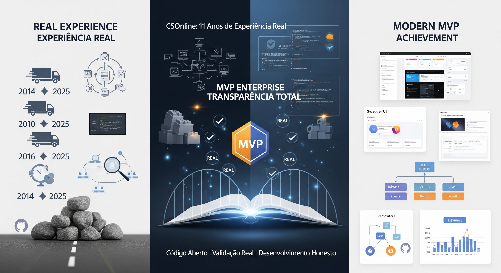

CSOnline Final: Gestão CD - Da Experiência Real ao MVP Enterprise Moderno

CSOnline Final: Gestão CD - Da Experiência Real ao MVP Enterprise Moderno
MVP Enterprise Completo e Lições de 11 Anos
Após meses de desenvolvimento, chegamos à conclusão do projeto CSOnline como MVP. Neste caminho, acumulamos conhecimento valioso: 90 tentativas falharam - mas encontramos as 10 que funcionam; conhecemos os limites da tecnologia atual; sabemos explicar por que certas coisas falham; e temos cicatrizes de projetos reais.
CSOnline: Gestão de CD Como Deve Ser
O Que Oferecemos
- Cadastros completos - Produtos, fornecedores, clientes
- Controle de estoque - Entradas, saídas, ajustes
- Pedidos integrados - Do registro à entrega
- Relatórios gerenciais - Tomada de decisão
- API documentada - Integrações facilitadas
- Segurança robusta - Proteção de dados
- Rastreabilidade total - Auditoria completa
MVP vs. Produto Final: Expectativas Realistas
CSOnline Hoje (MVP)
- Funcionalidades core implementadas
- Arquitetura sólida estabelecida
- Segurança robusta validada
- Documentação completa disponível
- Base técnica para evolução
Produto Final (Visão)
- Funcionalidades avançadas para casos específicos
- Integrações robustas com múltiplos sistemas
- Dashboards customizados para cada perfil
- Machine learning para otimização de estoque
- Análise preditiva para decisões estratégicas
Stack Tecnológico: O Melhor de Ambos os Mundos
Backend (Jakarta EE 10)
- Java 17 LTS - Base sólida e suportada
- Código limpo - Manutenível e extensível
- Autenticação JWT - Segurança moderna
- Design Hexagonal - Adaptabilidade
- Testes unitários - Cobertura acima de 90%
- Validação de dados - Integridade
- Auditoria completa - Rastreabilidade
Frontend (Vue.js 3)
- Composition API - Reutilização de lógica
- Typescript - Tipagem forte
- Responsividade - Mobile-first
- Pinia - Gerenciamento de estado
- Autenticação integrada - JWT
- Tema claro/escuro - Acessibilidade
- Componentes modulares - Reuso
Lições Aprendidas: Experiência vs. Teoria
11 Anos de Experiência Real
- Controle de CD - Operação de varejo nacional
- Comércio eletrônico - B2B e B2C
- Logística reversa - Fluxos completos
- Integração ERP - Múltiplos sistemas
- Gestão de transportadoras - Contratos reais
- Documentação fiscal - Conformidade legal
- Pagamentos integrados - Fluxo financeiro
Desafios Superados no CSOnline
- Escalabilidade - Arquitetura preparada
- Segurança em camadas - Proteção robusta
- Performance otimizada - Resposta rápida
- UX simplificada - Facilidade de uso
- Documentação abrangente - Entendimento claro
- Testes automatizados - Qualidade garantida
- CI/CD implementado - Entrega contínua
O Valor da Experiência Real
Da Dor ao Remédio
- Problemas reais que vivenciamos
- Soluções testadas em produção
- Otimizações baseadas em feedback
- Implementações sólidas e escaláveis
- Decisões conscientes sobre tecnologia
Da Teoria à Prática
- Arquitetura que suporta crescimento
- Código que sobrevive ao tempo
- Documentação que realmente ajuda
- Testes que previnem regressões
- Deployment que minimiza riscos
Diferenciais Técnicos
- Código aberto - Transparência total
- Bem documentado - Fácil entendimento
- Testado - Qualidade garantida
- Moderno - Tecnologias atuais
- Escalável - Preparado para crescer
- Seguro - Proteção em camadas
- Manutenível - Arquitetura limpa
Do MVP ao Produto: Próximos Passos
O Que Já Conquistamos
- MVP funcional - Pronto para uso
- Qualidade enterprise - Código robusto
- Documentação - Swagger e Javadoc
- Repositório público - Transparência total
- Testes automatizados - Garantia de qualidade
O Que Vem a Seguir
- Feedback de usuários reais - Validação
- Expansão de funcionalidades - Baseada em necessidades
- Otimizações de performance - Escala
- Integrações adicionais - Ecossistema
- Comunidade ativa - Colaboração
Por Que Escolher o CSOnline?
Diferencial Competitivo
- Experiência real - Não apenas teoria
- Transparência total - Código aberto
- Qualidade comprovada - Testes e documentação
- Suporte técnico - Experiência de 11 anos
- Evolução colaborativa - Desenvolvimento transparente
O Que Precisamos
- Feedback real de usuários potenciais
- Casos de uso específicos para validar
- Críticas construtivas para melhorar
- Colaboradores interessados em evoluir
Lições de Uma Década: Substância Sobre Marketing
Experiência Real Supera Hype
Aprendemos que experiência consolidada + tecnologia moderna + transparência total vale mais que promessas vazias + marketing agressivo + protótipos superficiais.
A IA Como Ferramenta, Não Milagre
A inteligência artificial foi nossa força de trabalho para superar limitações de recursos, não uma solução mágica para problemas inexistentes.
Código Fala Mais Que Palavras
Todo nosso trabalho está públicamente verificável. Não prometemos - mostramos.
CSOnline - Gestão CD: MVP Pronto para Validação
Experiência real de 11 anos + Stack enterprise moderna + Desenvolvimento assistido por IA + Transparência total = Um MVP sólido aguardando validação do mercado.
Acesse e Teste: www.caracore.com.br | Demo Local | Swagger UI Documentation
Convite à Ação
Empresários: Teste nosso MVP em suas operações reais
Desenvolvedores: Contribuam com nosso projeto open-source
Usuários: Compartilhem feedback honesto sobre funcionalidades
Céticos: Verifiquem nosso código e tirem suas próprias conclusões
Não vendemos sonhos. Construímos soluções. Com transparência.
Repositório: www.caracore.com.br